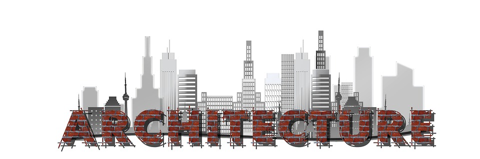

Profesi

Polisi

Arshitektur
>
Mekanik

Android Developer


Android pertama kali dikembangkan pada tahun 2003 oleh sebuah perusahaan Android Inc. Android, Inc didirikan di Palo Alto, California, Amerika Serikat pada bulan Oktober 2003 oleh Andy Rubin (pendiri Danger), Rich Miner (co-pendiri Wildfire Communications, Inc), Nick Sears (Vice Prsident T-Mobile), dan Chris White (pemimpin desain dan pengembangan di Webtv).
Last updated 3 mins ago
ARSITEKTUR ADALAH ARTEFAK YANG BERCERITA TENTANG PERKEMBANGAN SEJARAH MANUSIA Arsitektur lahir dari dinamika antara kebutuhan (kebutuhan kondisi lingkungan yang kondusif, keamanan, dsb), dan cara (bahan bangunan yang tersedia dan teknologi konstruksi).
Last updated 3 mins ago

Pada zaman Kerajaan Majapahit patih Gajah Mada membentuk pasukan pengamanan yang disebut dengan Bhayangkara yang bertugas melindungi raja dan kerajaan.
Last updated 3 mins ago
Tentara Nasional Indonesia (TNI) sejak didirikan mengalami banyak perkembangan dan penyempurnaan organisasi untuk mencapai efektifitas dan efisiensi dalam melaksanakan perannya Berawal dari pembentukan organisasi Badan Keamanan Rakyat (2 Agustus 1945) selanjutnya berkembang menjadi Tentara Keamanan Rakyat (5 Oktober 1945).
Last updated 3 mins ago

teknik mesin atau teknik mekanik adalah ilmu teknik mengenali aplikasi dari prinsip fisika untk analisis. ahli atau paka dari teknik mesin biasanya disebut sebagai insinyur (teknik mesin.)
Last updated 3 mins ago
Kata Farmasi berasal dari kata Pharmacon yang merupakan bahasa Yunani yang berarti racun atau obat. Farmasi merupakan profesi kesehatan yang meliputi kegiatan di bidang penemuan, pengembangan produksi, pengolahan, peracikan, informasi obat dan distribusi obat.
Last updated 3 mins ago

Toba Fathir Auladya

Aodellas Magosiang
Raditya Fajar Bayu P

Sudiyono

Matsna Hidayatur Rochman
Reza Andika Pratama
SD : SD N 5 KEDUNGSUREN
SMP: SMP N 2 PEGANDON
SMK: SMK BINA UTAMA
Donec id elit non mi porta.OLAHRAG
Donec id elit non mi porta.Jangan Ragu Untuk Menghubungi Kami